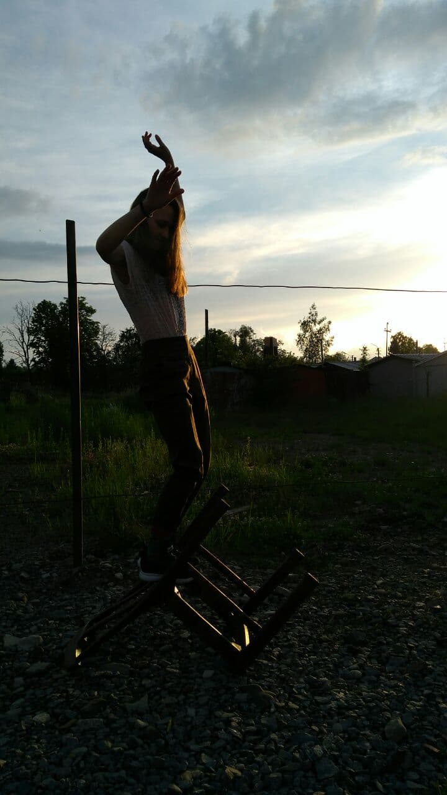

Хаю-хай звами Діана

Пару фактів про мене
- Люблю гори.
- Багато їм.
- Меломан
Я з соляного міста - Дрогобич і мені 19 рочків.
Творча особистість, малюю, пишу віршики, а ще граю на музичних інструментах.
Займаюся саморозвитком та вільно володію німецькою мовою.
Інструменти на яких я граю
- Гітара.
- Окарина (зозуля).
- Фортепіано.
- Сопілка.